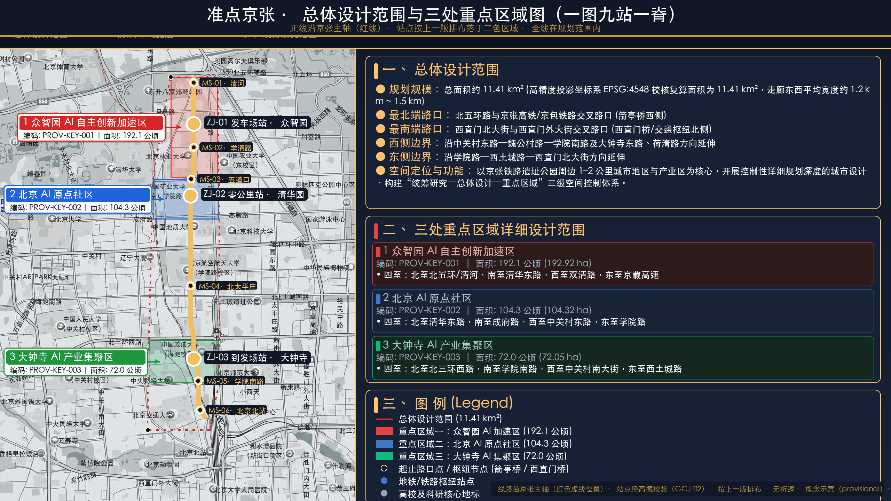

准点京张JINGZHANG ON TIME
核心指标
总览地图

总体设计范围 11.41 km²（EPSG:4548 provisional）：京张遗址公园为运行图正线，三处重点区域自北向南——ZJ-01 发车场站（众智园 192.1ha）· ZJ-02 零公里站（原点社区 104.3ha）· ZJ-03 到发场站（大钟寺 72.0ha）。
三显示信号
按运行图时刻完成服务，无人工接管，状态公开
晚点超阈值：自动公告 + 补偿通道开启 + 人工接管中
退回无 AI 基线：普通路径/人工服务/公共空间不受影响
三层范围
| 层级 | 面积 | 范围与任务 |
|---|---|---|
| 统筹研究范围 | 43.6 km² | 海淀南部创新廊道：北至北五环、东至京藏高速、南至西直门外大街、西至万泉河路 |
| 总体设计范围 | 11.41 km² | 京张遗址公园周边 1–2 公里城市地区与产业区；用地/蓝绿/交通/风貌框架 |
| 重点区域范围 | 368.4 ha | 众智园 192.1 ＋ 原点社区 104.3 ＋ 大钟寺 72.0；精细化设计三处核心片区 |
重点区域 · 三座站
ZJ-01 发车场站（众智园 192.1ha）
验证整备库：成对测试（AI开/AI关）与基线核验，拿「准点签章」才允许进入运行图。场景锚：T-01 登记处 + 信号柱 SP-01/02。
ZJ-02 零公里站（原点社区 104.3ha）
清华园车站旧址活化=时刻表大厅；首班车试点舱（T-07）锚定——90 天首班车全流程。场景锚：T-04 换乘衔接台。
ZJ-03 到发场站（大钟寺 72.0ha）
到发广场三件套（信号柱+正点率公告牌+晚点补偿亭）；运行图年鉴馆（T-08）锚定。场景锚：T-02 公告牌。
用地分区与更新
| 用地 | 面积 | 占比 | 更新动作 |
|---|---|---|---|
| LU-001 研发创新 | 311.9 ha | 27.3% | 新建预留（信号灯柱/时刻表信息板等小型设施） |
| LU-002 绿意开敞 | 270.8 ha | 23.7% | 保留修缮（遗址公园主轴/滨水绿地） |
| LU-003 产业商业 | 309.4 ha | 27.1% | 改造提质（清河沿线存量厂房、低效楼宇） |
| LU-004 人才社区 | 249.2 ha | 21.8% | 保留修缮（高校院所建筑）；大钟寺拆除探讨（待工程调查） |
交通慢行与蓝绿公共空间
交通慢行
TOD 三站点缝合（五道口/清华东路西口/大钟寺）；主脊五带固定次序（时刻表带—无障碍带—慢行带—人工服务带—信号柱序列）；15 处断点缝合单元；换乘衔接协议（凭证人工签署）。
蓝绿公共空间
一轴两河多廊百园：遗址公园主轴＋清河/小月河；绿地斑块 10 处 3.55km²；9.5km 绿脊风廊（预计降温 0.8–1.5°C，synthetic 待 CFD 验证）；清河低碳水岸生态感知。
建筑
建筑普查未发布：buildings.geojson 全部 status=unknown 诚实留空；拆改留为概念草案（confidence=low），官方数据到位后整包复算。
AI 场景（8 张场景卡）
| ID | 场景 | 空间载体 | 准入 | 机制一句话 |
|---|---|---|---|---|
| T-01 | 运行图登记处 | 全带三站 | L1 | 没有时刻表的车不能开——未登记不得运行 |
| T-02 | 正点率公告牌 | 三站时刻表大厅 | L1 | 月度公开正点率，晚点超阈值亮黄+公告补偿 |
| T-03 | 天窗广场 | 主脊沿线 | L1 | 每周固定检修时段 AI 全带停摆，公共空间回归无 AI 状态 |
| T-04 | 换乘衔接台 | 三区交界 | L2 | 跨区交接按换乘时刻匹配，凭证人工签署 |
| T-05 | 晚点补偿亭 | 各站 | L1 | 晚点超阈值自动开放人工替代/免费等价/申诉——晚点必有交代 |
| T-06 | 信号灯柱 | 主脊三站 | L1 | 绿/黄/红三显示公共状态码 |
| T-07 | 首班车试点舱 | 原点 100 米窗口 | L2 | 90 天首班车全流程（登记-试运行-考核-放行/停运） |
| T-08 | 运行图年鉴馆 | 大钟寺 | L1 | 全年复盘公开，失败与晚点入档——运行图不说谎 |
运行图治理与更新项目
核心指标与任务覆盖
6 项 KPI（正点率/晚点率/停运兑现率/天窗执行率/换乘衔接准时率/补偿兑现率）以运行图日志为数据源；任务书三大定位/五大功能/agent.1-6 全覆盖（standard_matrix 9/9）。
自检状态
self_check ok=true：官方四门禁全 PASS（validate/spatial/visual/professional 0 错误）；运行图校验器 10 用例 3 接受 7 拒绝；manifest 39 文件含 sha256。
来源与假设
sources.json 四级分级 21 条；法条引用原文（生成式AI办法 14/15 条等）。主要假设：边界 provisional（official_boundary=false）；建筑/控规/路网未发布（unknown 不伪装）；绩效待 90 天首班车试点。
更新项目与实施
90 天首班车（D0-30 登记→D31-60 试运行→D61-90 考核）；六项更新项目 JZ-01~06 Proof-Mile 闭环；运营共同体五方；五类资金财政防火墙。